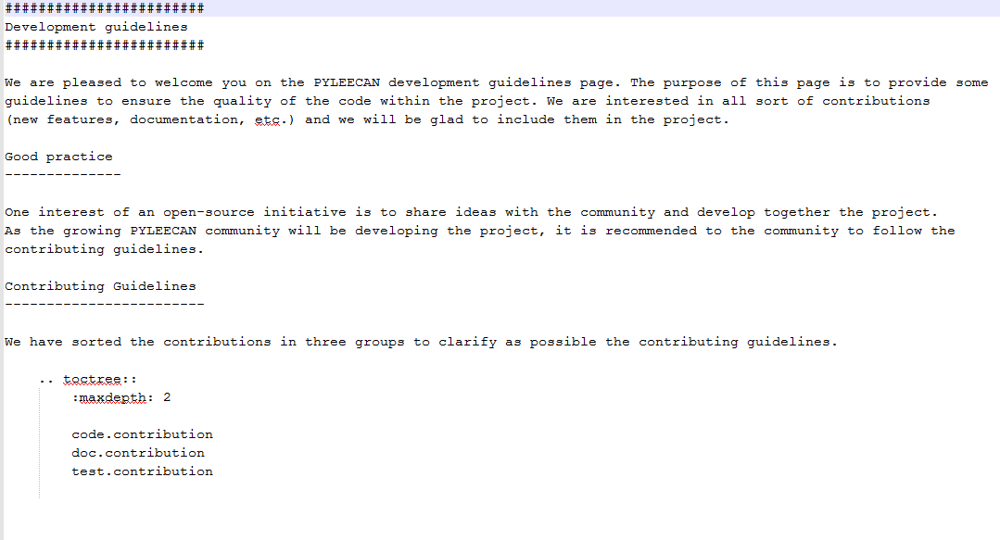

Doc contribution¶
On this page, you will find the guidelines to contribute to PYLEECAN documentation. We will present you the docstrings format used in PYLEECAN modules and we will explain how we generate the documentation with Sphinx. The documentation generated will be available on its own Github repository pyleecan-doc where we will gladly welcome your doc contribution.
PYLEECAN docstring format¶
For PYLEECAN’s modules documentation, the docstring format chosen is numpydoc which is the most used format by the scientific community to document projects. We have also choose this format because it is supported by Sphinx, a tool used to generate the PYLEECAN website. The numpydoc docstring guide explains in details how to write docstrings in numpydoc format.
Here an example of docstrings in a PYLEECAN module
def build_geometry(self, sym=1, alpha=0, delta=0):
"""Build the geometry of the machine
Parameters
----------
self : Machine
Machine object
sym : int
Symmetry factor (1= full machine, 2= half of the machine...)
alpha : float
Angle for rotation [rad]
delta : complex
Complex value for translation
is_simplified: bool
True to avoid line superposition
Returns
-------
surf_list : list
list of surfaces needed to draw the lamination
"""
Contribute to the doc¶
Sphinx¶
Sphinx is used to generate the PYLEECAN website by parsing the project and generating “.rst” files (reStructuredText) according to the documentation (docstrings: numpydoc) in each module of the project. This “.rst” files will be used after, by Sphinx, to generate the html pages. Note also that to add pages to PYLEECAN website, we add a .rst file and we regenerate the html pages. You can see the .rst file used to generate the page by clicking on show source on the left side bar of each page.
As example the development main page:
Contribution¶
There are two different ways to contribute to documentation:
- By adding docstrings in python modules to document a specific segment of code. For example the function square below, with docstrings in the triple quotes.
def square(param1):
"""Return the square of param1
Parameters
----------
param1 : type of the parameter (int)
description of the parameter
Returns
-------
res type of the value returned (int)
description of the value returned
"""
res = param1 ** 2
return res
In this case you may have to make a pull request of the module changed to the pyleecan code repository so that we regenerate the documentation on our side. We recommend to see the section Submit your contribution.
- By adding a .rst file, for example if you have developed a new feature and you want to make tutorial of it.
In this case you may want to write the documentation in “.rst” file and Submit your contribution on pyleecan-doc to share with the community. After the html pages regeneration, the documentation submitted will be available on the PYLEECAN website.